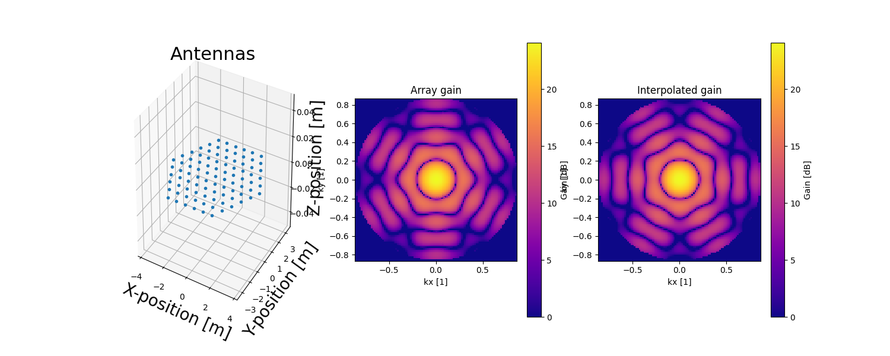

Note
Click here to download the full example code
Predefined EISCAT 3D Demonstrator¶

import matplotlib.pyplot as plt
import sorts
import pyant
import sorts
radar = sorts.radars.eiscat3d_demonstrator
radar_interp = sorts.radars.eiscat3d_demonstrator_interp
fig = plt.figure(figsize=(15,6))
axes = [
fig.add_subplot(131, projection='3d'),
fig.add_subplot(132),
fig.add_subplot(133),
]
pyant.plotting.antenna_configuration(radar.tx[0].beam.antennas, ax=axes[0])
pyant.plotting.gain_heatmap(radar.tx[0].beam, resolution=100, min_elevation=30.0, ax=axes[1])
axes[1].set_title('Array gain')
pyant.plotting.gain_heatmap(radar_interp.tx[0].beam, resolution=100, min_elevation=30.0, ax=axes[2])
axes[2].set_title('Interpolated gain')
pyant.plotting.show()
Total running time of the script: ( 0 minutes 0.477 seconds)